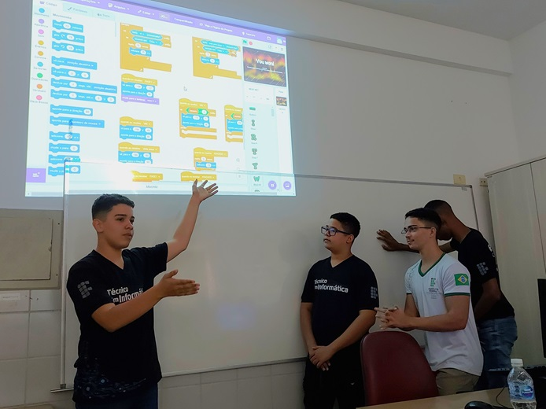

Prof. Heraldo Junior
Prof. Heraldo JuniorDurante algumas semanas do ano de 2023, Estudantes do curso técnico em Informática do Instituto Federal de Educação, Ciência e Tecnologia do Sertão Pernambucano (IFSERTÃOPE) Campus Salgueiro embarcaram em uma jornada educacional transformadora por meio da Aprendizagem Baseada em Projetos (ABProj). Neste relato de experiência, compartilharemos como essa abordagem transformou o processo de ensino-aprendizagem, destacando as etapas realizadas, os desafios enfrentados e os impactos positivos observados.
O Contexto: Desafios e Necessidades de Transformação
O IFSERTÃOPE, assim como muitas instituições de ensino, enfrenta o desafio de preparar os alunos para que adquiram não apenas conhecimentos teóricos e de base técnico-científica, mas também habilidades práticas, bem como capacidade de aplicar o que aprendem em situações reais. A ABProj surgiu como uma resposta a essa necessidade, proporcionando uma mudança significativa na abordagem educacional.
A intervenção relatada neste artigo foi realizada durante a disciplina de Lógica de Programação, que ocorre no segundo semestre do curso e possui um alto índice de reprovação. Nessa e em outras disciplinas de programação, a maioria dos professores faz uso excessivo de exercícios teóricos e práticos envolvendo problemas matemáticos, visando o desenvolvimento da lógica nos estudantes. Mas, esse formato não tem se mostrado muito eficiente e atrativo para os estudantes.
Ao perceber as dificuldades encontradas na implementação prática dessa metodologia ativa, o professor Heraldo Junior verificou que a avaliação da aprendizagem é um dos pontos chave. A avaliação deve ser contínua, formativa e com foco no aprendizado. Dessa forma, tendo em vista as dificuldades encontradas por porfessores no planejamento, execução e avaliação de atividades por meio da ABProj, o projeto de mestrado do professor propôs uma intervenção com uma turma de ensino médio, para que fosse possível verificar a influência do uso da metodologia ativa e de diferentes formas de avaliação na melhoria do aprendizado de Lógica de Programação.
O Início da Jornada
O processo de implementação da ABProj começou pelo planejamento. O professor definiu os objetivos de aprendizagem, formas de avaliação e tema dos projetos (Sustentabilidade). Além disso, para instigar os estudantes, foi definida uma questão norteadora, que era "Como estimular o pensamento sustentável através dos jogos?".
Esse tema foi escolhido por permitir uma abordagem interdisciplinar e para permitir aos estudantes buscarem soluções que fossem pessoalmente significativas, apresentando situações presentes na comunidade em que vivem.
O uso dos jogos foi definido como elemento motivador, sendo que os jovens da geração nativa digital possuem grande afinidade com essas tecnologias e em nenhuma outra disciplina do curso eles teriam essa oportunidade de aprender sobre desenvolvimento de jogos. No semestre em que a intervenção foi aplicada, os conteúdos de Lógica de Programação foram apresentados através da Plataforma Scratch, que faz uso de programação em blocos e possui interface bastante lúdica e intuitiva.
Como um dos pilares da ABProj é garantir a autonomia e protagonismo dos estudantes, a turma foi dividida em grupos e cada grupo teve a liberdade de definir como seria o seu projeto, com o apoio e orientação do professor. As únicas exigências feitas foram que o produto final deveria ser um jogo na plataforma Scratch e que deveria propor uma solução para a questão norteadora.
Após a divisão das equipes, seus membros deviam eleger um líder. O papel do líder foi essencial no desenvolvimento dos projetos e garantia das entregas. Esse líder era o responsável por gerenciar as tarefas e ter um contato mais próximo com o professor, para orientação e feedback. Após isso, cada líder criou um grupo no aplicativo de mensagens instantâneas Whatsapp, adicionando os outros membros da equipe e o professor, para que pudesse acompanhar as interações e trabalho colaborativo.
Além do grupo no Whatsapp, o professor também usou as ferramentas online do Google para postar atividades e acompanhar o desempenho dos estudantes. Foram usados os aplicativos Classroom para publicação da webquest ( saiba o que é e como criar uma) contendo orientações, formas de avaliação e entregas parciais e finais, e Drive para criação de planilhas de acompanhamento e notas, bem como documentos de avaliação e feedback.
Para motivar mais ainda os estudantes, nas duas primeiras semanas foram realizados duas palestras rápidas sobre desenvolvimento de jogos com professores especialistas, para que os grupos tivessem um direcionamento inicial mais preciso. Esses professores também deram apoio durante a execução dos projetos, tirando dúvidas dos alunos e orientando-os sobre o desenvolvimento dos jogos.
Esses momentos, em que os estudantes saem da rotina das aulas com o professor e recebem um conteúdo novo mostrou-se um importante elemento motivador. O professor da disciplina acordou previamente com os palestrantes o conteúdo a ser abordado e orientou os estudantes para que preparassem previamente dúvidas sobre o assunto para que fossem perguntadas durante as palestras.
Avaliação Formativa e Multidimensional
A transição de um modelo tradicional para a ABProj não foi isenta de desafios. Durante as primeiras semanas, o professor sempre relembrava durante as aulas como seria o processo, como os estudantes seriam avaliados, entre outras informações. Como tudo era muito novo para a turma, essa etapa inicial foi de adaptação e necessitou de um feedback mais rápiddo pelo professor, que era feito de forma quase instantânea através dos grupos de whatsapp nos momentos fora da sala de aula. Além disso, todo o processo, atividades, formas de avaliação e materiais de apoio foi postado na webquest na primeira semana de aulas. Mas, como a ABProj exige uma certa flexibilidade, os estudantes foram avisados que, em cacso de mudanças, essas seria discutidas com eles.
Dessa forma, a cada semana, os estudantes tinham novas tarefas a faz. Desde criar um Game Design Canvas (planejamento do jogo), até a criação de personagens e codificação no Scratch. Após cada entrega, que era feita de forma online pelo Classroom e Portfólio Online, o professor atribuia feedback de duas formas, por meio das rubricas de avaliação nativas do Classroom e também através de um arquivo de texto com o feedback detalhado inserido na pasta do grupo no portfólio do Drive.
Diferente das outras disciplinas, nessa experiência os alunos foram avaliados através dos projetos, de autoavaliação, avaliação por pares, portfólios e minitestes de monitoramento. Os minitestes eram pequenas atividades aplicadas após cada etapa de desenvolvimento dos projetos, contendo duas ou três questões sobre lógica de progamação, com análise de códigos feitos no Scratch. Segundo XXXXXXXX, os minitestes servem para verificar se os estudantes estão realmente contribuindo nas atividades do projeto de forma colaborativa, ou estão apenas pegando carona no desempenho dos colegas de equipe. Ao todo foram realizados três minitestes. A pesquisa mostrou que os grupos em que os líderes tiveram maiores notas nos minitestes, tiveram maiores notas gerais dos projetos.
Na metade do andamento dos projetos e ao final das entregas, os estudantes realizaram a autoavaliação e avaliação por pares, através de um formulário online criado no Google Formulários. Nessa avaliação, os estudantes avaliaram os quesitos liderança, desempenho geral no projeto, comunicação e trabalho em equipe, desenvolvimento do código do jogo no Scratch, organização e documentação do código desenvolvido, design e usabilidade dos personagens e cenários desenvolvidos, criatividade (capacidade de inovar), proatividade e resolução de problemas, capacidade de cumprir os prazos e assiduidade (contribuiu sempre que solicitado pela equipe).
Para responder às perguntas, os estudantes escolhiam entre 5 níveis de resposta, que variavam de "Péssimo" a "Ótimo". Após cada rodada de avaliação, os resultados de cada equipe eram compartilhados no grupo correspondente no Whatsapp em forma de gráfico, sendo que apenas os membros de cada grupo viam os resultados dos seus integrantes.
Resultados Observados: Transformações na Aprendizagem dos Alunos
Por fim, ao final de todas as entregas realizadas, os estudantes apresentaram seus projetos para a turma, como forma de finalização das atividades. Esses deveriam apresentar o resultado final do jogo produzido, bem como uma explicação geral sobre as tecnologias utilziadas e temática abordade. Além disso, foi solicitado que a página dos jogos na plataforma Scratch contivesse detalhes sobre o projeto, bem como instruções sobre como jogar, e que também fosse criado um vídeo de divulgação do jogo para que fosse postado nas redes sociais.
Confira abaixo os jogos produzidos pelos alunos durante a disciplina de Lógica de Programação:

A apresentação final e entrega dos últimos artefatos citados acima foram avaliadas por meio de rubrica de avaliação desenvolvida especificamente para os projetos, abordando quesitos importantes para o alcance dos objetivos de aprendizagem definidos pelo professor durante o planejamento das atividades.
Além dessa apresentação para o professor e a turma, os estudantes foram convidados a apresentar seus resultados também na Semana de Ciência e Tecnologia do Campus, onde puderam expor os jogos para todo o campus, permitindo que outros professores e alunos da instituição pudessem jogar e dar feedback sobre os resultados obtidos.

Impacto na Comunidade: Conectando a Educação ao Mundo Real
À medida que a ABProj foi sendo incorporada ao cotidiano dos alunos, os resultados positivos começaram a se manifestar. Os alunos tornaram-se mais engajados e motivados, demonstrando maior autonomia na busca por conhecimento. A capacidade de trabalhar em equipe, resolver problemas complexos e aplicar o aprendizado em situações reais tornou-se evidente nos projetos desenvolvidos.
As avaliações por pares realizadas mostraram-se uma ótima alternativa para motivar os estudantes a ter mais responsabilidade perante as atividades dos projetos. Analisando as notas atribuídas, apenas um dos grupos sempre atribuiu notas altas a todos os integrantes, demonstrando assim uma avaliação combinada. Mas, o restante das equipes utilizou essa ferramenta como forma de deixar claro para o professor que determinado(s) integrante(s) da equipe não estava(am) contribuindo o suficiente. Além disso, sempre que chegavam reclamações sobre membros das equipes por falta de empenho ou problemas de trabalho em grupo, o professor reforçava a importância de registrar esses problemas na avaliação por pares.
Uma das grandes vantagens da ABProj é a conexão direta entre a aprendizagem e a comunidade. Os projetos desenvolvidos pelos alunos não ficaram restritos às salas de aula, mas se estenderam para a comunidade local. Isso não apenas fortaleceu os laços entre a instituição e a sociedade, mas também proporcionou aos alunos uma compreensão mais profunda das necessidades reais de sua região. Alguns dos jogos trouxeram temáticas das comunidades dos alunos, como o jogo MirasCity, que tem sua história passada na cidade de Mirandiba-PE e o jogo Virgulina e a Cabaça Mágica, que retrata os problemas ambientais do sertão nordestino.
Desafios Contínuos e Melhorias Futuras
mbora tenha havido sucessos notáveis, a jornada de implementação da ABProj no IFSERTÃO não está isenta de desafios contínuos. A avaliação constante, o aprimoramento da formação docente e a adaptação de projetos para atender às demandas em constante evolução são aspectos essenciais para o sucesso contínuo da metodologia.
A experiência do IFSERTÃO com a Aprendizagem Baseada em Projetos é um testemunho do poder transformador dessa abordagem educacional. Ao romper com paradigmas tradicionais, a instituição não apenas prepara seus alunos para os desafios do século XXI, mas também contribui para o desenvolvimento sustentável da comunidade. A jornada está em andamento, mas os resultados até agora são promissores, indicando que a ABProj pode ser a chave para uma educação mais significativa e impactante.